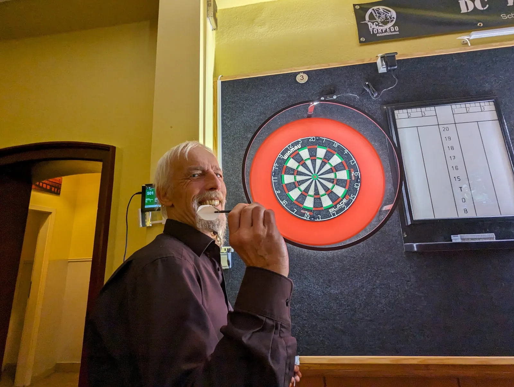

DC
DC Siggi feiert mit Stil – Geburtstagssieg beim Torpedo-Trainingsturnier!

Der Tag hätte nicht besser sein können! Wir freuen uns, den Sieg unseres großartigen Siggi beim dc Torpedo Trainingsturnier zu feiern. Und als ob das noch nicht genug wäre, feiert er auch noch seinen Geburtstag!
Siggi hat uns einmal mehr gezeigt, dass Alter nur eine Zahl ist, indem er mit unglaublicher Präzision und Stil auf die Dartscheibe zielt. Seine Leistung beim Turnier war ebenso spektakulär wie die Kerzen auf seiner Geburtstagstorte, und wir sind unglaublich stolz darauf, ihn als Teil unseres Teams zu haben.
Ein riesiges Dankeschön an Siggi für seine unermüdliche Treue und seinen Einsatz für unser Team. Deine Leidenschaft und Hingabe sind eine ständige Inspiration für uns alle, und wir fühlen uns geehrt, diesen besonderen Tag mit dir zu teilen. Herzlichen Glückwunsch zum Geburtstag und zum Turniersieg, Siggi! Möge dieses neue Lebensjahr genauso erfolgreich und erfreulich sein wie der heutige Tag! 🎯🎂